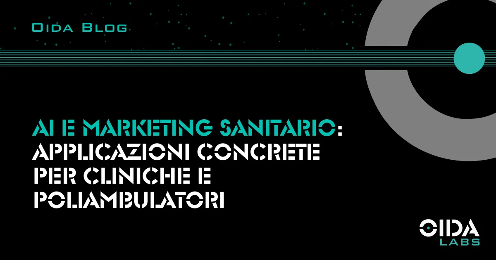

← Tutti gli articoliAI e marketing sanitario: applicazioni concrete per cliniche e poliambulatori
Intelligenza artificiale nel marketing sanitario: automazione del follow-up, ottimizzazione campagne e analisi predittiva. Strategie e dati per strutture sanitarie private.
L’intelligenza artificiale è entrata nel marketing sanitario. Non come promessa futura, ma come insieme di strumenti operativi già disponibili. La domanda per le strutture sanitarie private non è più se adottare queste tecnologie, ma quali e come.
Questo articolo analizza le applicazioni concrete, con dati di settore e indicazioni operative.
- Automazione del follow-up: il tempo di risposta come vantaggio competitivo
- Riduzione dei no-show attraverso l’analisi predittiva
- Ottimizzazione delle campagne pubblicitarie
- Personalizzazione della comunicazione paziente
- Metriche e KPI: misurare l’impatto dell’AI
Automazione del follow-up: il tempo di risposta come vantaggio competitivo
Il tempo che intercorre tra la richiesta di un potenziale paziente e la risposta della struttura sanitaria è uno dei fattori più sottovalutati nel marketing sanitario. I dati mostrano un impatto diretto sulla conversione.
Secondo uno studio pubblicato su Harvard Business Review, i lead contattati entro 5 minuti hanno una probabilità di conversione 21 volte superiore rispetto a quelli contattati dopo 30 minuti. Nel settore sanitario, dove la decisione di prenotare è spesso legata a un bisogno immediato, questa finestra temporale si riduce ulteriormente.
Il tempo medio di risposta nel settore healthcare è di 2 ore e 5 minuti. Le strutture che riescono a comprimere questo intervallo acquisiscono un vantaggio competitivo misurabile.
L’AI interviene su questo processo attraverso sistemi di risposta automatizzata che operano 24 ore su 24. Non si tratta di chatbot generici, ma di soluzioni progettate per il contesto sanitario: raccolta delle informazioni preliminari, verifica della disponibilità in tempo reale, conferma dell’appuntamento. Il 40% delle prenotazioni in ambito sanitario avviene fuori dall’orario di apertura degli studi — un sistema automatizzato intercetta questa domanda che altrimenti andrebbe dispersa.
Riduzione dei no-show attraverso l’analisi predittiva
Gli appuntamenti non rispettati rappresentano un problema strutturale per le strutture sanitarie. Il tasso medio di no-show negli ambulatori si attesta intorno al 18-19%, con picchi che possono raggiungere il 21% in alcune specialità. Ogni slot non utilizzato è un costo: tempo medico non impiegato, personale amministrativo mobilitato inutilmente, pazienti in lista d’attesa che avrebbero potuto occupare quello spazio.
L’AI affronta questo problema su due livelli distinti.
Il primo è l’automazione dei promemoria. I sistemi di reminder intelligenti, calibrati su più touchpoint — 48 ore prima, 24 ore prima, 2 ore prima — riducono i no-show del 20-30%. Uno studio pubblicato su JMIR nel 2024 ha documentato una riduzione del 50,7% dei mancati appuntamenti in strutture di primary care che hanno implementato sistemi AI-driven per la gestione delle prenotazioni. Il meccanismo è semplice: il paziente riceve un messaggio che gli permette di confermare, riprogrammare o cancellare con un tap. La frizione si riduce, la struttura recupera visibilità sull’agenda.
Il secondo livello è la previsione. I modelli predittivi analizzano i pattern storici di ogni paziente — frequenza delle visite passate, comportamento rispetto ai promemoria, caratteristiche demografiche — e assegnano un punteggio di rischio a ciascun appuntamento. Lo staff amministrativo può così concentrare gli sforzi di conferma telefonica sui pazienti con maggiore probabilità di non presentarsi, invece di distribuire le chiamate in modo indifferenziato.
Ottimizzazione delle campagne pubblicitarie
Le piattaforme pubblicitarie di Google e Meta hanno integrato funzionalità di machine learning che modificano il modo in cui le campagne sanitarie vengono gestite.
Performance Max di Google e Advantage+ di Meta utilizzano algoritmi che ottimizzano in tempo reale la distribuzione del budget, l’identificazione delle audience e il bidding. Per le campagne di marketing sanitario, questo significa targeting più preciso su base geografica e comportamentale, con aggiustamenti automatici basati sui dati di conversione effettivi.
Il vantaggio operativo è duplice: da un lato la riduzione del tempo di gestione manuale delle campagne, dall’altro un miglioramento progressivo delle performance attraverso l’apprendimento continuo del sistema. L’algoritmo identifica quali combinazioni di creatività, audience e posizionamenti generano i risultati migliori e rialloca il budget di conseguenza.
La pubblicità healthcare su Google e Meta è soggetta a restrizioni specifiche relative alle condizioni di salute sensibili. Gli strumenti AI di queste piattaforme includono controlli di compliance automatizzati, ma la verifica umana resta necessaria per evitare disapprovazioni o sospensioni degli account pubblicitari.
Personalizzazione della comunicazione paziente
L’AI permette di segmentare la comunicazione in modo granulare, adattando messaggi e tempistiche alle caratteristiche di ciascun paziente.
Le applicazioni concrete includono:
- Email marketing con contenuti dinamici basati sulla storia clinica e sulle preferenze espresse
- Sequenze di nurturing automatizzate per pazienti che hanno mostrato interesse ma non hanno ancora prenotato
- Comunicazioni post-visita personalizzate con indicazioni di follow-up pertinenti alla prestazione effettuata
Le comunicazioni personalizzate generano tassi di apertura e di risposta significativamente superiori rispetto alle comunicazioni generiche. La rilevanza del messaggio diventa un fattore di efficienza operativa: meno invii a vuoto, più conversioni a parità di volume.
Qualsiasi sistema che gestisce dati sanitari deve essere conforme al GDPR. Le soluzioni devono garantire la protezione dei dati sensibili e la trasparenza sul loro utilizzo. È un requisito non negoziabile.
Metriche e KPI: misurare l’impatto dell’AI
L’adozione di strumenti AI nel marketing sanitario richiede un sistema di misurazione adeguato. Senza metriche, non c’è modo di valutare se l’investimento sta producendo risultati.
Tempo medio di prima risposta. Misura l’efficacia dell’automazione del follow-up. L’obiettivo è scendere sotto i 5 minuti per i canali ad alta priorità come richieste via form e telefonate.
Tasso di no-show. Monitora l’impatto dei sistemi di reminder e previsione. Una riduzione del 20-30% è un benchmark realistico nel primo trimestre di implementazione.
Costo per paziente acquisito. Non il costo per lead, ma il costo effettivo per paziente che si presenta in struttura. È la metrica che integra l’efficienza del marketing con l’efficienza del processo di conversione. Abbiamo dedicato un articolo alla differenza tra CPL e CAC e al perché solo il secondo misura davvero la redditività.
ROAS (Return on Ad Spend). Le piattaforme AI-driven permettono un’attribuzione più precisa della spesa pubblicitaria. Un ritorno di 3-5x è considerato sostenibile nel marketing sanitario, con variazioni significative per specialità.
Sintesi
Le applicazioni AI con maggiore impatto immediato nel marketing sanitario sono tre: automazione del follow-up, riduzione dei no-show con sistemi predittivi, ottimizzazione delle campagne pubblicitarie. In ciascuna di queste aree, i dati di settore mostrano miglioramenti misurabili e un ritorno sull’investimento documentabile.
L’AI è uno strumento. Il valore sta nella strategia che lo guida e nella capacità di integrarlo nei processi operativi della struttura sanitaria. Per capire come scegliere un partner tecnico capace di governarla, abbiamo individuato quattro criteri oggettivi per valutare un’agenzia di marketing sanitario.
Fonti: Harvard Business Review (Lead Response Management Study), JMIR 2024 (AI-driven scheduling in primary care), Menlo Ventures State of Health AI 2025, BCG Health Care Outlook 2026.